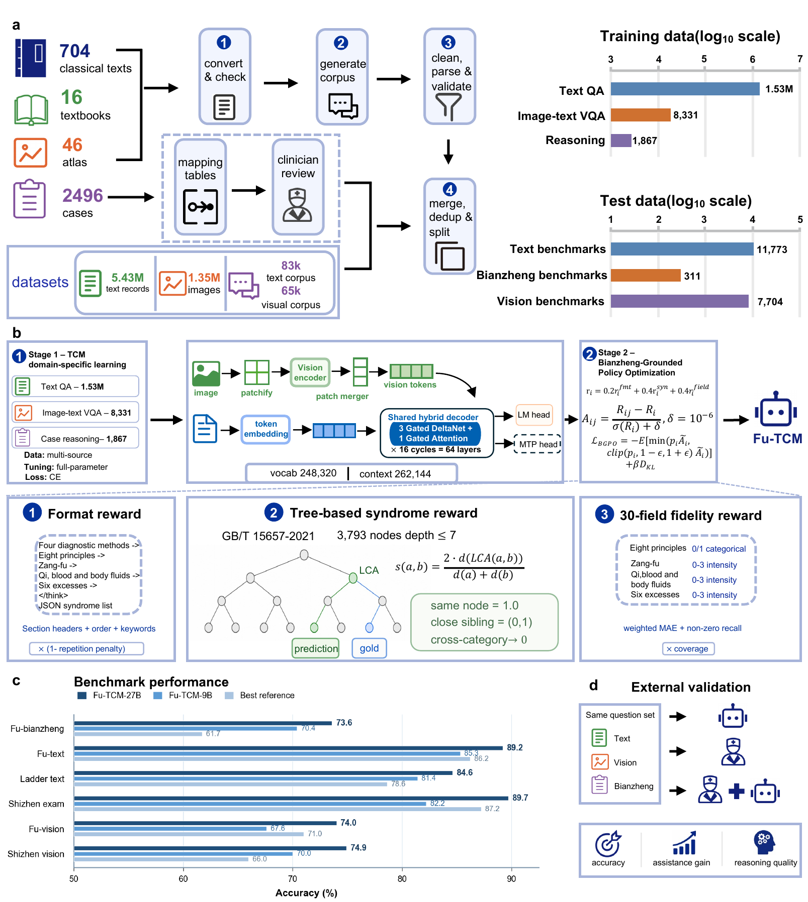

Answers questions grounded in classical works, textbooks, materia medica, formulas, theory, and clinical knowledge.
Overview
FU-TCM is trained on approximately 7.12 million examples spanning classical texts, textbooks, medical images, clinical cases, and public datasets. TCM domain-specific learning is followed by Bianzheng-Grounded Policy Optimization, with verifiable rewards for format, tree-based syndrome consistency, and 30-field fidelity.
81.01%six-benchmark macro-average for FU-TCM-27B
6 / 6benchmarks led by FU-TCM-27B
r = 0.89model-level correlation between intermediate and final accuracy

Core capabilities
The model is trained around three complementary capabilities required for multimodal TCM reasoning.
Connects textual context with tongue, face, herb, and other medical images.
Represents the intermediate judgments linking four-examination evidence to a syndrome.
Exposes 30 structured fields so practitioner review is not limited to the final label.
Two-stage training
The project moves from multimodal TCM domain learning to reward-based alignment of syndrome differentiation.
Base VLMs
→
TCM Domain Learning
→
BGPO
→
FU-TCM
Research use: current results come from retrospective benchmarks. FU-TCM is intended for research and practitioner-reviewed decision support, not autonomous diagnosis.
Core implementation
Go directly to the model-training, policy-optimization, inference, and evaluation code.
Supervised trainingFull-parameter SFT
LLaMA-Factory, DeepSpeed ZeRO-3, and bf16 training configuration.
→ Reasoning alignmentBGPO rewardVerifiable rewards for format, syndrome consistency, and structured diagnostic fields.
→ InferenceTransformers evaluationText and vision evaluation with the Transformers backend.
→ ServingvLLM evaluationBatch inference and evaluation through the vLLM backend.
→Documentation
| Guide | Description |
|---|---|
| Model overview | Model family, capabilities, and structured reasoning design. |
| Training overview | TCM domain-specific learning, BGPO, and evaluation. |
| Training and evaluation reference | Main configuration, reward function, and executable entry points. |
| Security policy | Credentials, sensitive data, and responsible disclosure. |